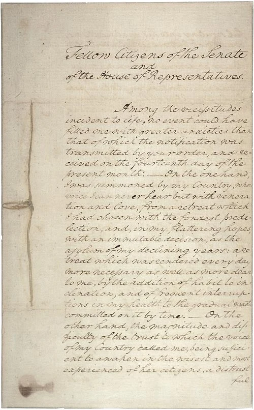
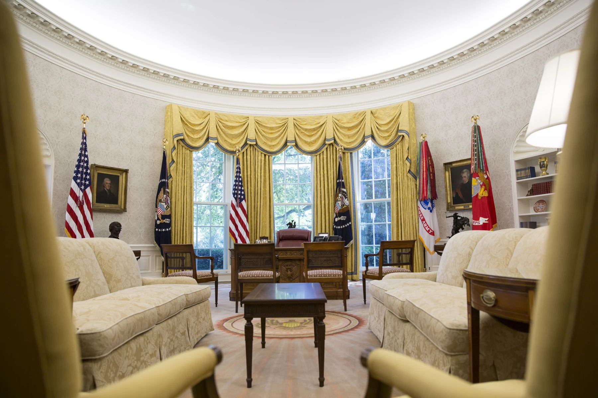
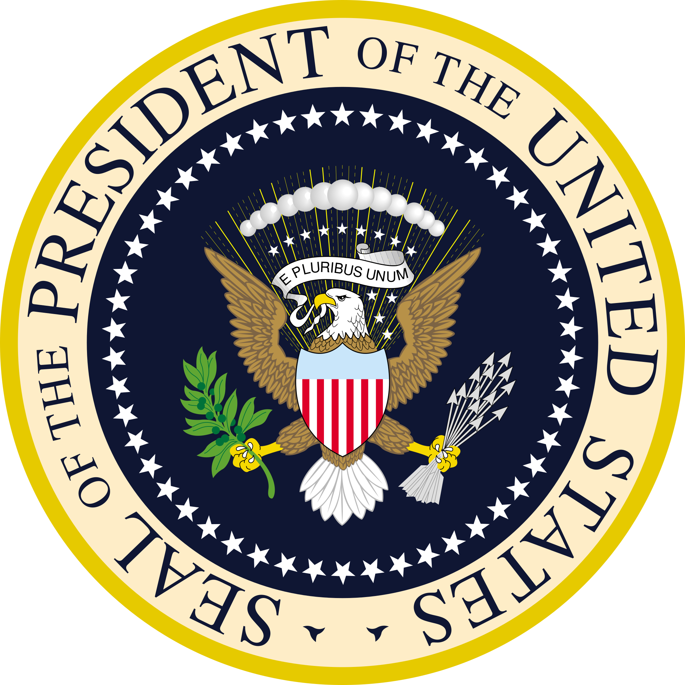
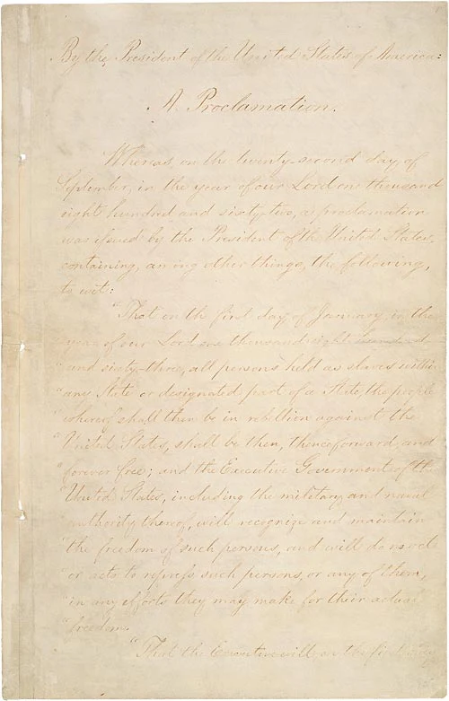
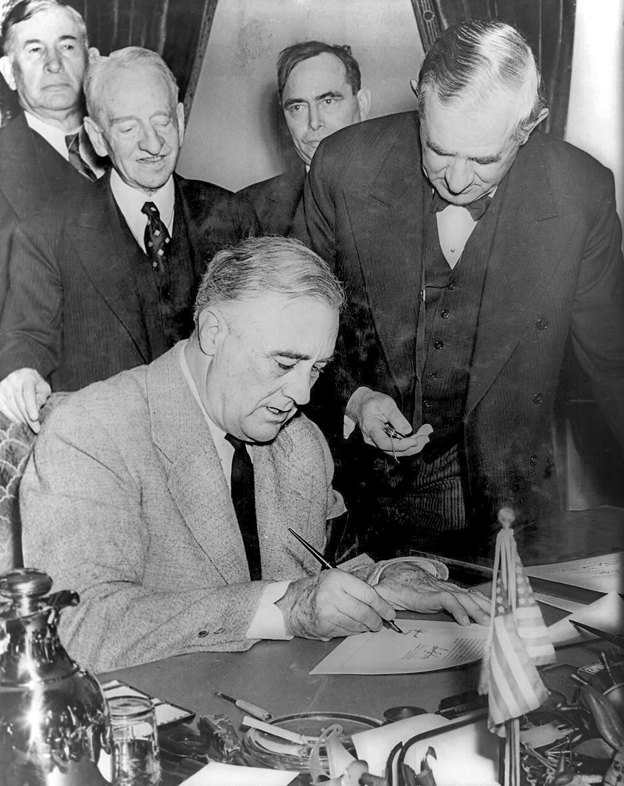
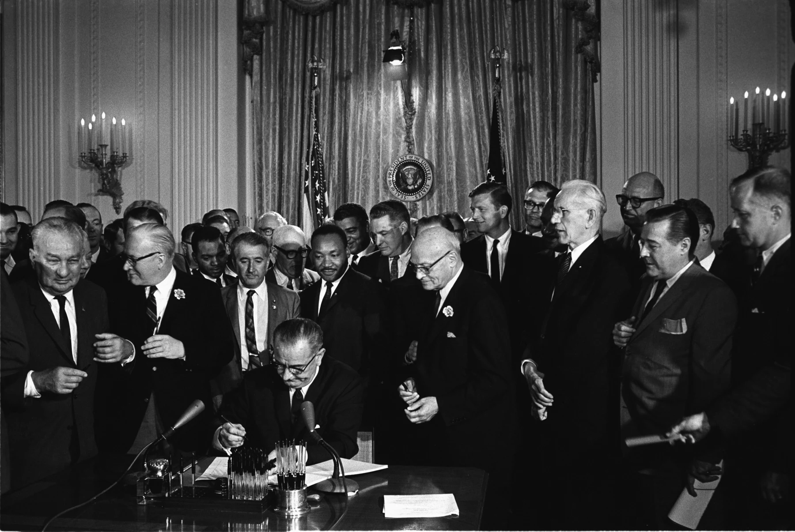
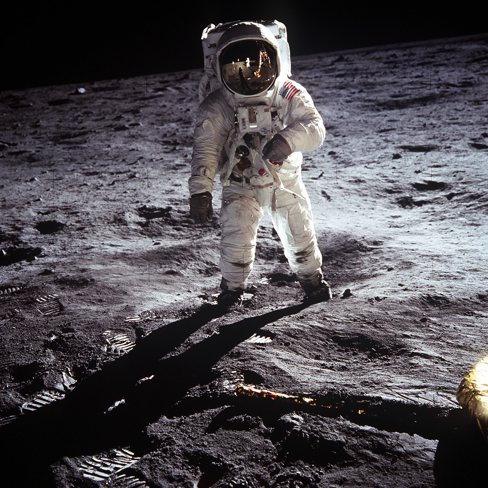
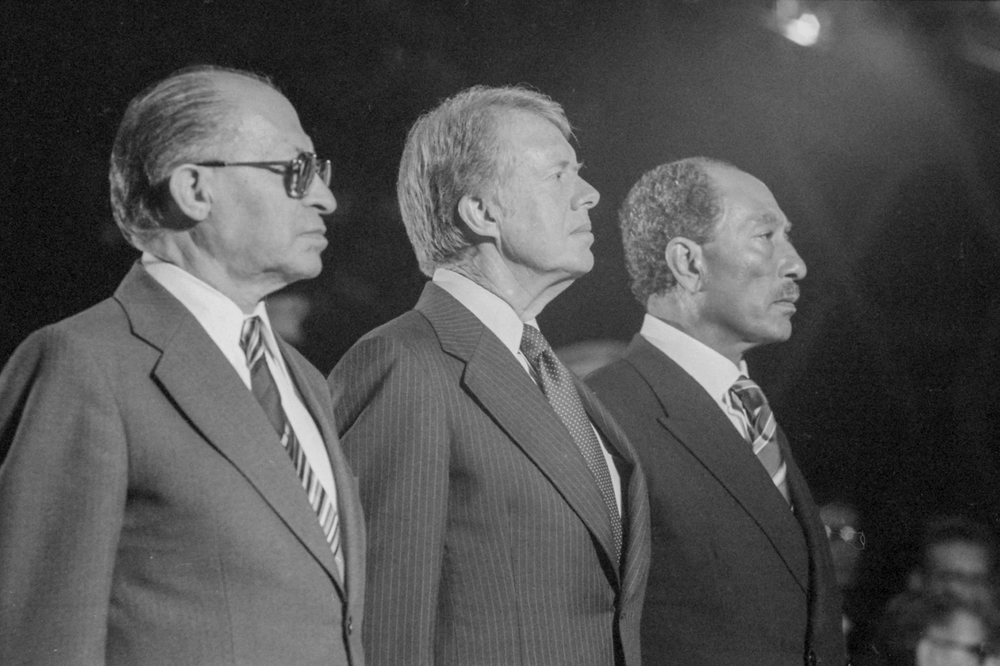

April 30, 1789
Washington establishes the presidency


American History · Leadership & legacy

The President of the United States leads the executive branch, carries out federal laws, and represents the nation. The office is a public trust, limited by the Constitution.
Jump to the hallThe president directs the executive branch with help from the Cabinet and federal agencies, signs or vetoes bills, and recommends policies and a budget. Congress makes laws and controls federal spending.
As Commander in Chief, the president directs the armed forces; Congress has the power to declare war. As Head of State, the president represents the nation. Often called the Chief Diplomat, the president conducts foreign relations and negotiates treaties with Senate approval. The president also nominates judges and senior officials, usually with Senate confirmation.
The president must take an oath to uphold the Constitution and faithfully execute the laws. The office also carries civic expectations: serve the whole country, respect lawful elections, and support a peaceful transfer of power.
Titles and roles: “President of the United States” is the formal title. “Commander in Chief” is a constitutional role. Head of State, Head of Government, Chief Executive, and Chief Diplomat describe different parts of the same job, not separate offices.
Required: Take the presidential oath before exercising the office, report to Congress on the State of the Union from time to time, and respect the Constitution’s checks and balances. Congress and the courts have their own powers.
Customs: Inaugural addresses, State of the Union speeches delivered in person, honoring military service, and welcoming a successor express continuity and public service. These forms are traditions, not all legal requirements; the Constitution permits a written State of the Union report.
Accountability: A presidential term lasts four years. The Twenty-Second Amendment generally limits a person to being elected president twice. Congress can impeach and remove a president through the constitutional process.
Read the Constitution, Articles I and II, and the Twentieth and Twenty-Second Amendments.
Interactive gallery · Every presidency since 1789
Select a portrait to discover a presidency. Use ← and → inside a profile to travel through time.
Search a year to find who held office then. Era groups use the year a term began.
No presidencies match. Try a surname or year, or reset the gallery.
Forty-five people have held the office across forty-seven presidencies (Grover Cleveland and Donald Trump each served two non-consecutive terms). Hover over a portrait for a quick glimpse; select one for the full profile: job approval, deficit and debt, what supporters and critics point to, and what was happening around the world during the term.
The numbers are context for discussion, not a report card. Presidents inherit budgets, wars and economies, and Congress, the courts, other nations and plain luck shape every record. Use the profile’s discussion question to separate what a president controlled from what they only faced.
Sources. Job approval: Gallup, Presidential Job Approval Center (term averages, highs and lows from Truman onward). Debt: U.S. Treasury Fiscal Data, Historical Debt Outstanding, nominal dollars, measured from the fiscal year-end before a president took office to the one before they left. Deficit as a share of GDP: FRED and the Office of Management and Budget, fiscal years from 1929. Historians’ rankings: C-SPAN Survey of Presidential Leadership, 2021. Portraits: public-domain or CC0 images from Wikimedia Commons, each credited in its profile. Use the arrow keys to move between presidents.
Explore six turning points through federal records and photographs. These are starting points for discussion, not a ranking of presidents. Select any image to examine it at classroom size.
April 30, 1789

January 1, 1863

December 11, 1941

July 2, 1964

July 20, 1969

September 7, 1978

Look closely: What does each image reveal about presidential power? What people, debates, or consequences remain outside the frame?